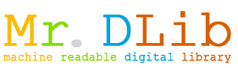

Mr. DLib is a machine readable digital library that enables you to access meta data and full text of academic articles via a REST based webservice (API) in XML, JSON and BibTeX. Mr. DLib was introduced on JCDL 2011. The paper may be found here.
Currently, we completely re-design Mr. DLib.
Meanwhile, you might want to have a look at our free software Docear for managing electronic literature, drafting papers and managing references. |